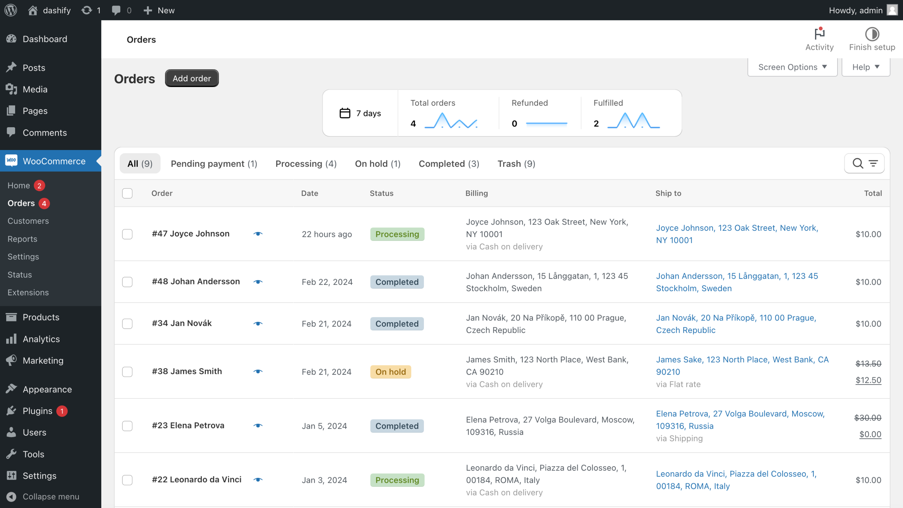

Better WooCommerce order management.
Search, navigate, and manage orders faster with Dashify.
Get Dashify for freeHow does Dashify make WooCommerce better?
Shopify-like order view
Looking for user friendly order editing? Dashify’s layout puts key information such as products, order number, date, and status at the top. All actions buttons are clear and grouped together.
Mobile-friendly order table
Check orders from your phone! Dashify makes the table responsive and fully usable on mobile devices.

Previous and next order buttons
From the order view, jump to the previous or next order with a button or keyboard shortcut. Optionally, skip to the next order of the same status.
Localized date and time
View order date and time in your region’s local format.
Order trend graphs
See order trends to get insight into your store’s performance.
Order status filters
Without Dashify, the order status filters are small and easy to miss. Dashify makes it part of the table so it’s bigger and easier to click.
Floating bulk actions
If you’re in the middle of a long list of orders, the bulk actions appear as a floating bar, allowing you to perform actions without having to scroll back up.
Search and filter
In normal WooCommerce, all the filters and search are visible, making the page cluttered. With Dashify, the filters and search are neatly grouped together, and hidden when not in use.
Timeline
The order notes becomes a timeline, giving you more space for important context about the order.
Back button
Go back to the order list quickly from any order.
Auto-expanding order notes
Type long order notes with ease with Dashify’s auto-expanding fields.